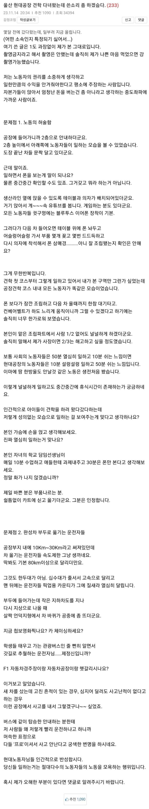
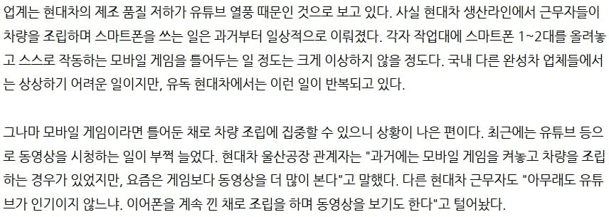
현대차 울산공장 와이파이 에디션, 폰게임 에디션, F1 에디션
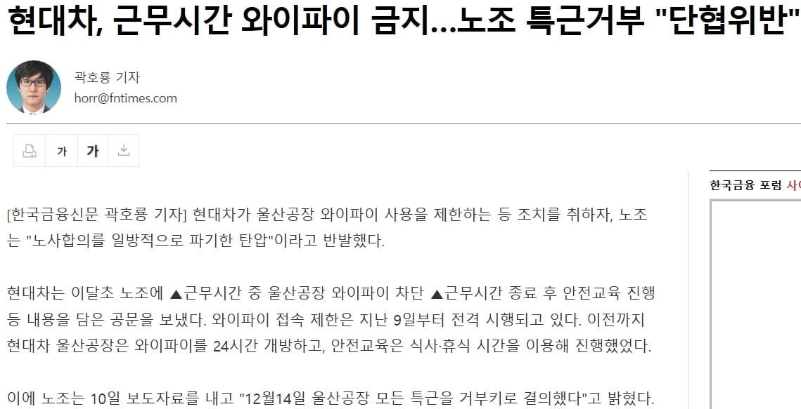
현대차 울산공장 와이파이 사용을 제한하자 "울산공장 모든 특근 거부"로 응수
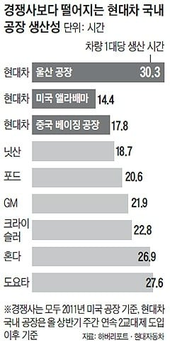
생산성 최악
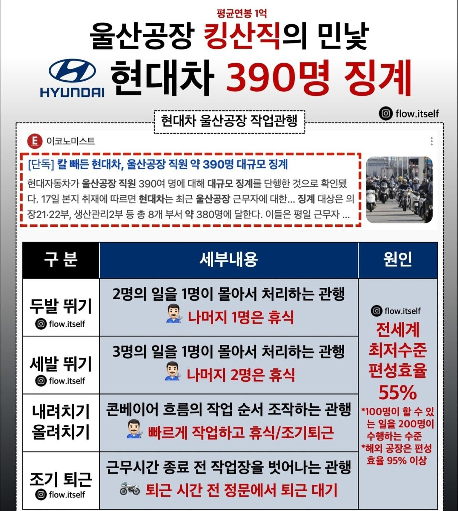
편성효율 최악
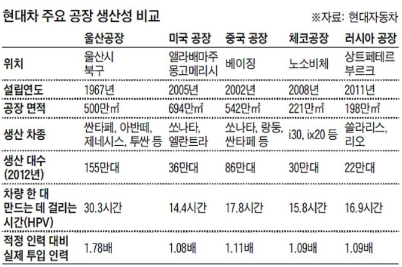
해외 현대차 공장들과 비교해도 생산성 최악, 적정인력대비 1.78배 투입
흠... 그럼 다른 현기차 공장은 어떨까?
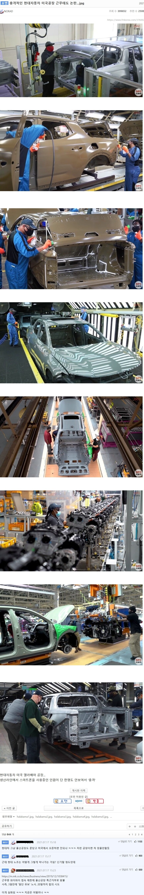
미국 현대차 공장
그럼 국내는?
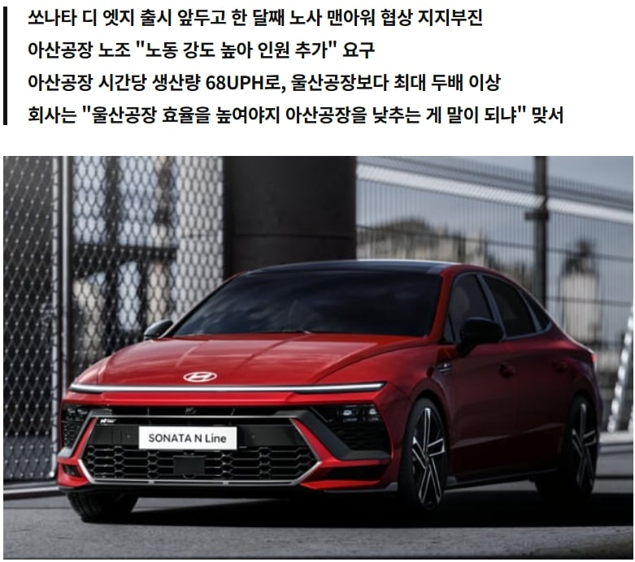
아산 현대자동차 공장은 UPH(시간당 생산 대수) 울산공장의 최소 두배이상.
아산 현대차노조는 이번 전면파업은 대빵인 울산노조 따라나갔다곤 하는데 UPH 울산공장이랑 똑같이 맞추자는건 울산노조들이 안들어줬는지
협상카드에 없음.
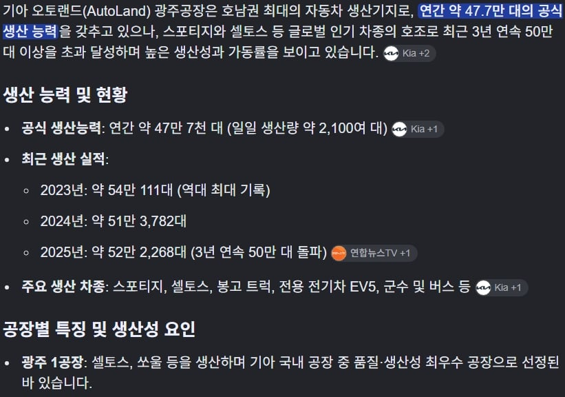
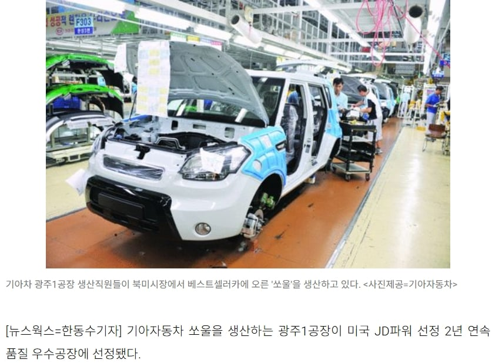
현대자동차그룹의 자회사인 기아자동차의 광주공장은 목표치 초과달성에 품질도 우수해서 과거 미국 JD파워에서 2년연속 품질 우수공장에 선정되기도함
이번 전면파업에 동참하지도 않음.
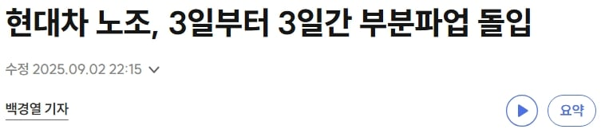
그런데 현대자동차는 울산노조 주도하에 2025년에도 가볍게 3일동안 부분파업 해주시고
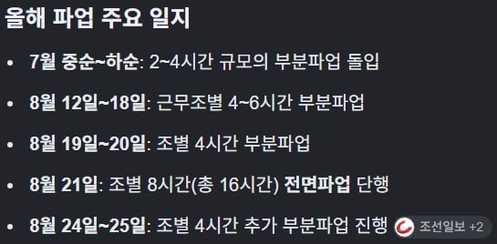
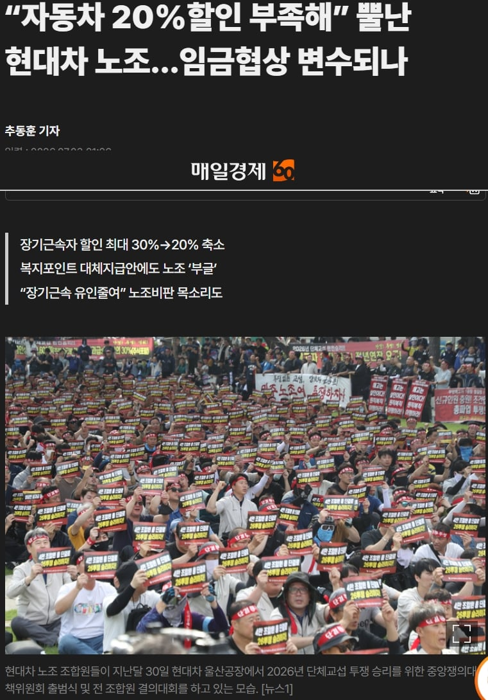
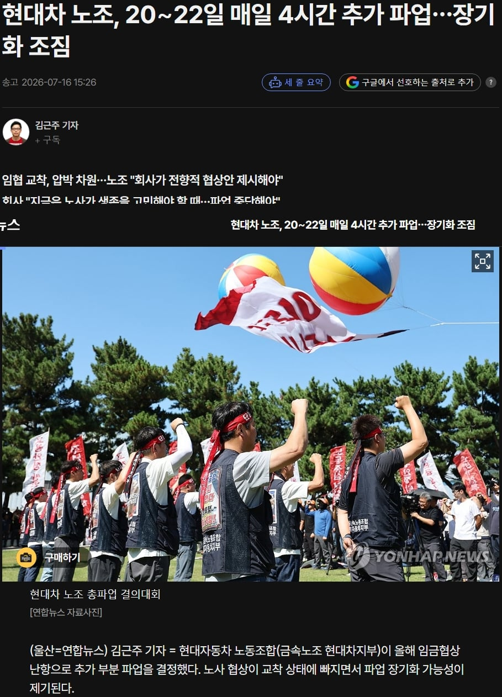
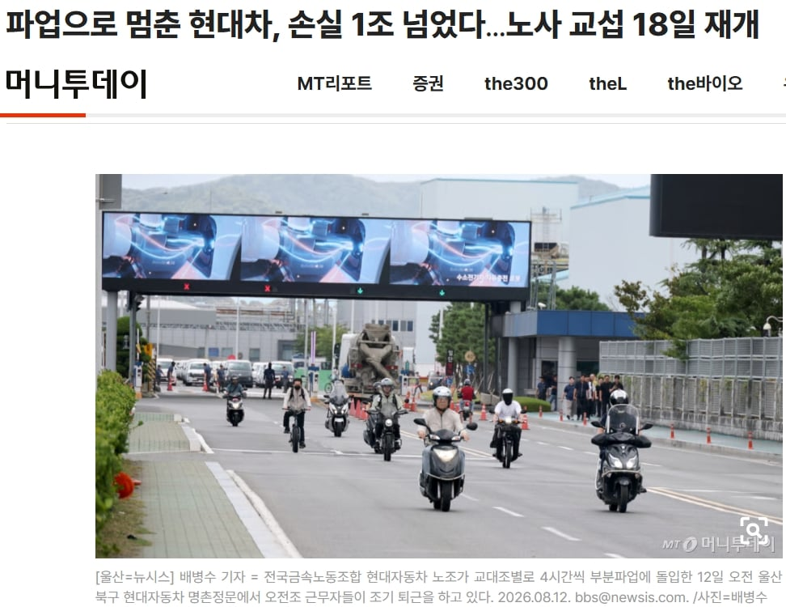
2026년에는 7월에도 부분파업, 8월초부터 중순까지 부분파업해서 이미 8월 14일까지만 해도 올해 부분파업으로 손실규모 1조원 넘었는데
거기에 19일에 기어이 전면파업 때려버리면서 3300억 손실 추가함
이런데도 현대자동차 울산노조 얘기만 나오면 쉴더들이 튀어나오는건 왜그런지 모르겠음 (진짜모름)
삼성전자 평택노조때는 파업 아닌 교섭행위만 해도 나라망치는 매국노급으로 욕얻어먹었는데말이지
댓글
수집 당시 댓글 10개
세계는게이가지배한다 · 23 시간 전
일부 병신들 보고 울산 전체 공장이라고 이야기하는건 개 비열한 선동이잖아? 해외는 안그런것 처럼 이야기하는것도 웃기고. 누가 현대차 풋옵션 들고 있냐?
끼룰렝 · 23 시간 전
이번 GV90도 울산공장(좀 더 정확히는 EV전용 신공장) 생산이던데 품질이 어떻게 될려나
Braveman · 23 시간 전
현차 노조는 노조를 너무 남용함 그걸 보고 다른 노조들이 또 따라함. 악순환임. 사회 암적인 존재가 됨. 저렇게 해도 회사가 어쩌지 못하는구나. 오히려 일하기 더 편해지는구나. 하면서 다 따라하는거지. 제한할수 있는 법이 없으니 그 모든 피해는 결국 차값으로 귀결되고 알게 모르게 소비자한테 전가 되는거지
손흥민이 · 22 시간 전
노조노조 거리는데 정작 현기차 노조만 저러고 최근 까지 삼성에도 노조가 없엇던게 현실임 노동권이 권리가 크다? 웃기는 소리마셈 편법 쓰면 회사가 무슨짓이든 할수잇음 현기가 착해서 안하는거고 ㅋㅋ 노무사 이야기들어보면 조땐다 ㅋㅋ
부스터팩 · 20 시간 전
별 옘병을 해도 무조건 사측은 악의 축이어야하는 사람들이 있으니 저 꼴까지 가는거지. 진짜 노동자의 권리를 존중하는사람들은 저걸 보고 탄식이 나오고 분노가 나와야 정상임. 저런 꼴때매 정당한 노조까지 괜히 피해보는거
흑자헬스무료흥보담당자 · 19 시간 전
내가 몇년전에 저렇다 글올리니까 남의 회사일에 관심끄라던대 ㅋㅋㅋㅋ근대 1차 하청만되도 다 조립하면서 폰보거나 블루투스 이어폰끼고 일함 ㅋㅋㅋ
병신을보고웃는개 · 17 시간 전
울산현대공장새끼들은 차량 수출 할때 다같이 태워서 좀 뇌두고 와라
TIA · 17 시간 전
신의 직장이긴 하네 ㄷㄷ
반대의견자동생성기 · 16 시간 전
차종이 많아서 그런건 아니고? 저 자료를 제공한게 현대자동차인데 아무리 씹 철밥통 노조라고 욕을 먹어도 노조 입장도 좀 들어봐야될거같은디...
유해화학물질 · 6 분 전
저사람들이 진짜 노동자의 적이야.